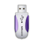

1.如何開始體驗 ezgo
● 在 Windows 下體驗 ezgo14
● 在不進入 Windows 的環境下，直接體驗 ezgo14
※註：Live 體驗是指不需要將軟體安裝到硬碟，透過媒介就可以啟動並執行作業系統。
● 各項體驗說明：
| 體驗方式 | 優點 | 缺點 |
 以虛擬軟體體驗 |
1.跨平台，不受系統限制。 2.可隨時體驗多個不同版本系統。 3.無需安裝系統、不影響原有電腦系 統及資料。 |
1.需下載ISO檔，佔用硬碟空間 2.無法儲存相關設定或檔案 3.電腦等級不夠，操作上會不流暢 |
光碟片體驗(Live) |
1.無需安裝任何軟體、不影響原有電 腦系統及資料。 2.可播放多媒體聲音 3.製作完成的作品及檔案，可儲存至 硬碟或隨身碟。 |
1.需下載ISO檔，並燒錄成光碟 2.需設定 BIOS 開機選項 3.電腦等級不夠，操作上會不流暢 4.無法安裝新的軟體 5.無法儲存系統相關變更或設定 |
|  隨身碟體驗(Live) |
1.無需安裝任何軟體、不影響原有電 腦系統及資料 2.可播放多媒體聲音 3.製作完成的作品及檔案，可儲存至 硬碟或隨身碟。 |
1.需下載ISO檔，並製作成開機隨 身碟。 2.需設定 BIOS 開機選項 3.受限於隨身碟讀取速度，操作上 會不流暢。 |
 硬碟體驗(安裝ezgo) |
1.執行速度最快、體驗品質最佳 2.可安裝新的軟體或套件 3.可讀取相關硬體及週邊設備 4.可儲存檔案及系統相關設定 |
1.需分割硬碟，並安裝系統 2.開機時，開機選項變多 3.檔案必須儲存於共有空間，否則 無法跨平台讀取。 |